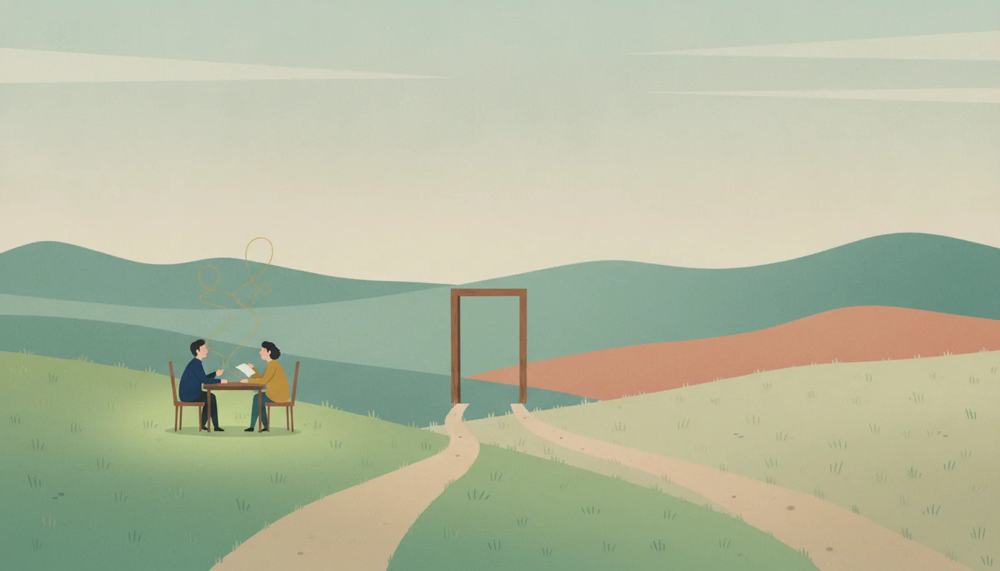

─ 行動が変わった研修と、感想文で終わった研修

満足度アンケートは、どちらも高得点でした。それでも半年後、片方の職場では行動が変わり、もう片方では何も変わりませんでした。講師の腕でも、教材の質でもありません。分けたのは、研修が始まる前と終わった後の設計です。
分岐点：研修の前後を設計したか、当日だけを設計したかこの事例の要点をA4一枚にまとめた、社内検討用の要約版（PDF）です。稟議書・企画書・会議資料への添付に、そのままお使いいただけます（無料・登録不要）。
社内検討用に要約版をダウンロード（PDF・A4一枚） 出典表記のままご利用ください（CC BY-NC-SA 4.0）研修で学んだことが現場で使われることを、研究の言葉で「研修転移（transfer of training）」と呼びます。転移の実証研究は1988年のボールドウィンとフォードのレビュー以来積み重ねられ、いま分かっているのは、転移を左右するのは当日の出来栄えよりも、前後の環境だということです。とりわけ、上司の関与が効きます。
転移する研修は、始まる前から始まっています。受講者は事前に上司と「現場の何を変えるために行くのか」をすり合わせ、自分の部署の実課題を持ち込みます。研修の中では、その実課題を教材にして演習します。
そして、終わった後が本番です。翌週には上司と実践計画を確認し、30日後には実践の報告会。人事は満足度ではなく、行動が変わったか（カークパトリックの4段階評価のレベル3）を追いかけます。数字が残るので、翌年度の予算査定でも「効果を説明できる研修」として残ります。
根拠：Baldwin & Ford (1988) の研修転移レビュー、Kirkpatrick の4段階評価モデル、中原淳ほか『研修開発入門「研修転移」の理論と実践』（2018年・国内企業の公知事例を収録）
ある会社の階層別研修。外部から評判のよい講師を招き、内容も演習も盛りだくさんの一日でした。終了後の満足度アンケートは5点満点の4.5。「明日から実践します」「目からうろこでした」──感想欄は前向きな言葉で埋まりました。
翌朝、受講者を待っていたのは、留守にした一日分のメールと通常業務です。上司は、部下がどんな研修を受けたのか知りません。聞かれもしないので、話す機会もありません。学んだ手法を試そうにも、職場のやり方は昨日までと同じです。
3ヶ月後、行動は完全に元通りになりました。翌年度の予算会議で経営陣に問われます。「あの研修、効果はあったの？」。人事が出せるのは満足度4.5という数字だけ。「満足度が高いのは分かった。で、何が変わったの？」──研修予算は、翌年度から削られました。
※ この失敗事例は、実在する特定の団体・個人を描いたものではなく、複数の実例をもとに再構成した「典型パターン」です（編集方針：読む前の、三つの約束）。
研修の前後を設計したか、
当日だけを設計したか。
ふたつの研修は、当日の中身がほぼ同じでも成立します。分岐点は、当日の外側にあります。研修評価の定番であるカークパトリックの4段階（反応・学習・行動・成果）でいえば、感想文はレベル1（反応）です。多くの研修がレベル2（学習）まででとまり、レベル3（行動）の壁を越えられません。壁を越えさせるのは講師の熱演ではなく、事前の上司の巻き込み・実課題の持ち込み・事後のフォローという、地味な前後の設計です。
皮肉なことに、前後の設計にかかる費用は、研修当日の費用よりずっと小さいのが普通です。いちばん安い部分を省いたために、いちばん高い部分（当日）がまるごと働かなくなる──これが「感想文で終わる研修」の構造です。
この事例の要点をA4一枚にまとめた、社内検討用の要約版（PDF）です。稟議書・企画書・会議資料への添付に、そのままお使いいただけます（無料・登録不要）。
社内検討用に要約版をダウンロード（PDF・A4一枚） 出典表記のままご利用ください（CC BY-NC-SA 4.0）研修を「当日のイベント」から「行動が変わる仕組み」へ組み替える設計を、教育担当者と一緒に行っています。
研修設計プログラムを見る
Baldwin, T. T. & Ford, J. K. (1988). Transfer of training: A review and directions for future research. Personnel Psychology, 41(1).／Kirkpatrick, D. L. Evaluating Training Programs（4段階評価モデル）／中原淳・島村公俊・鈴木英智佳・関根雅泰『研修開発入門「研修転移」の理論と実践』ダイヤモンド社（2018年）。
成功の航路は、これらの研究・書籍が示す転移設計の型を描いたものです。失敗事例は、複数の実例をもとに再構成した匿名の典型パターンです。シリーズの編集方針はハブページ「読む前の、三つの約束」をご覧ください。テキストは CC BY-NC-SA 4.0 で公開しています。